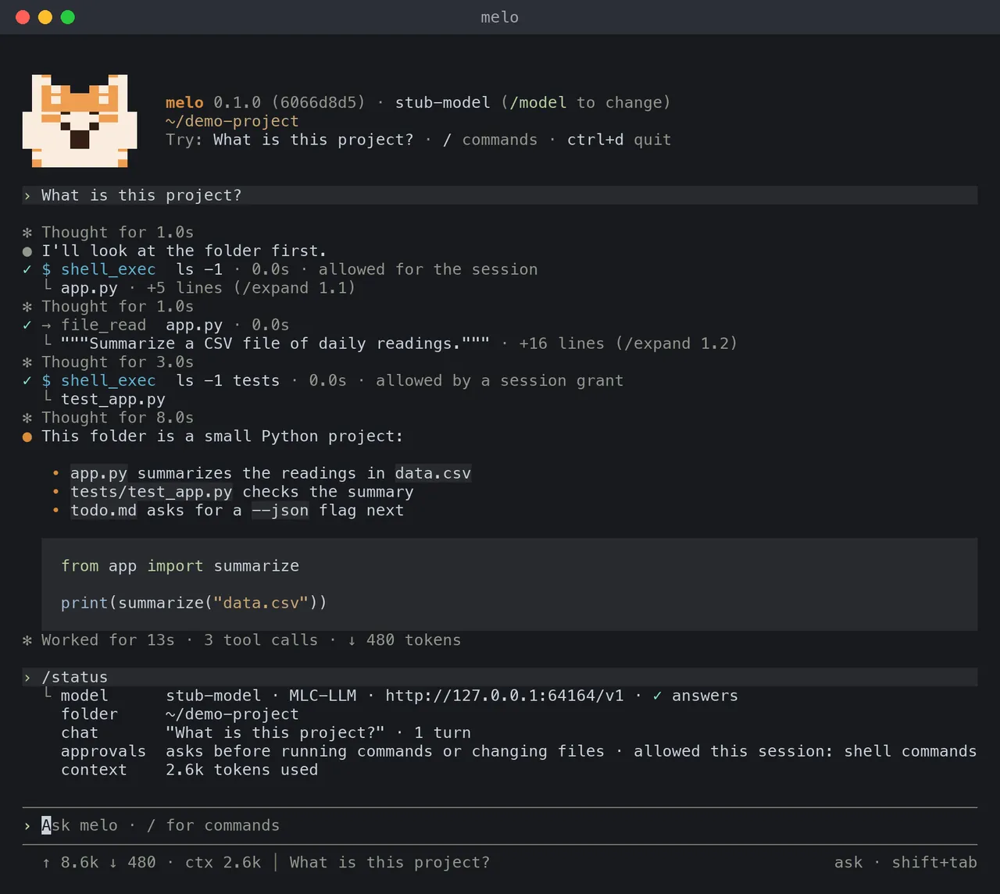
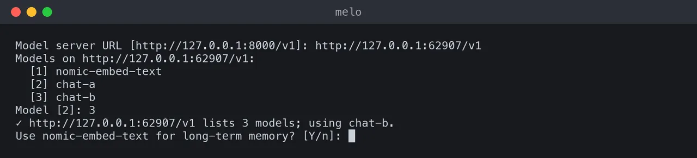
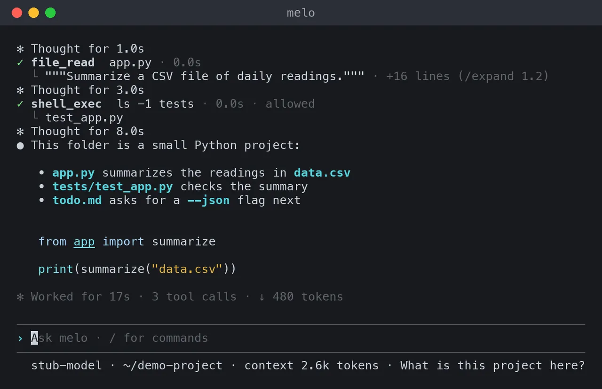
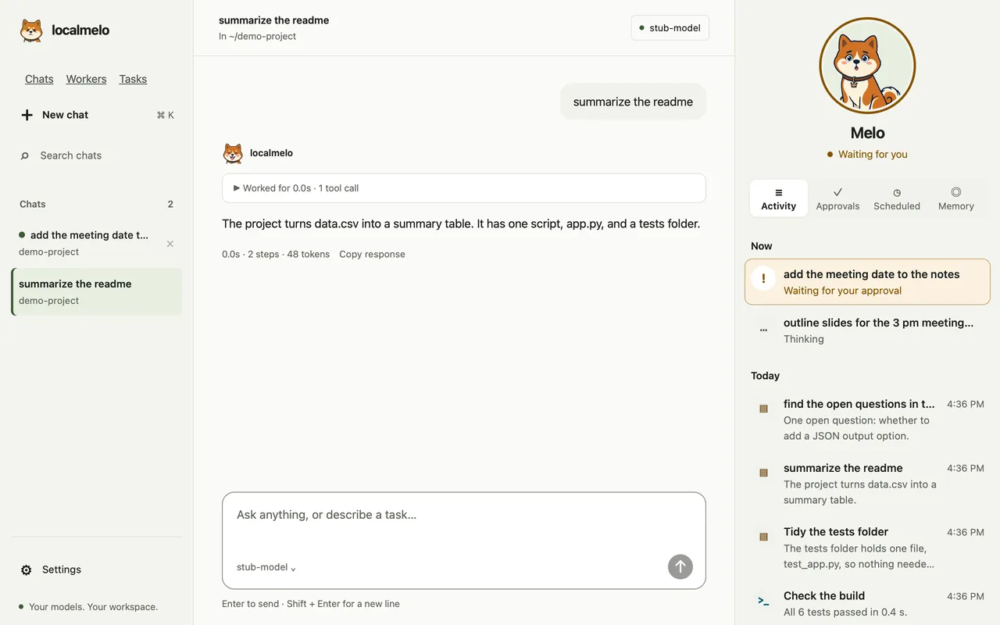
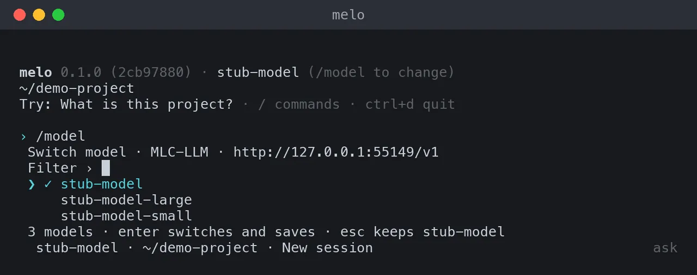

快速开始
安装 localmelo，在你自己的模型服务器上运行第一个任务，保存配置并启动网关。
开始之前
五步上手
安装
克隆仓库，让 uv 完成安装。
$ git clone https://github.com/localmelo/ $ cd localmelo $ uv sync --extra gateway $ source .venv/bin/activatelocalmelo.git 运行第一个任务
让 melo 连接你的模型服务器并提一个问题，答案会打印在 stdout。
$ melo -u http://127.0.0.1:8000/v1 -m Qwen3-8B-4bit "What is 6*7?"$ melo -u http://127.0.0.1:11434/v1 -m qwen3:8b "What is 6*7?"打开主对话
不带任务运行 melo：首次运行会找到你的服务器并保存配置。
$ melo交给它一个任务
在对话里提出更大的工作：它会成为任务，完成后以卡片回来。

查看它记住了什么
melo 跨对话保存笔记；你可以列出它们，或忘掉某一条。
$ melo memory list 3 Preferences You prefer short answers. from chat “I prefer short answers”, Oct 30 $ melo memory forget 3 -y Forgot note 3.
安装
$ git clone https://github.com/localmelo/localmelo.git
$ cd localmelo
$ uv sync --extra gateway
$ source .venv/bin/activate- uv 创建
.venv/（需要时会安装 Python 3.13），并装好网关的依赖。 - 请保留目录名
localmelo：改名的目录或 ZIP 下载会报错ModuleNotFoundError: No module named 'localmelo'。 - 激活只对当前终端有效；在其他地方用
uv run --project <clone> melo …。 - 在搭载 Apple 芯片的 Mac 上，
uv run python scripts/build_macos_app.py --install会把 App 构建到~/Applications。
用 pip 安装
$ git clone https://github.com/localmelo/localmelo.git
$ cd localmelo
$ python3 -m venv .venv
$ source .venv/bin/activate
$ pip install -e ".[gateway]"python3 必须是 Python 3.11 或更高版本；-e 让安装始终链接到这份代码。
运行第一个任务
模型可以运行 shell 命令和 Python 代码，也可以读写你能访问的任何文件：没有沙箱。要在不使用工具的情况下运行任务，请加上 --builtins none。见安全策略（英文）。
$ melo -u http://127.0.0.1:11434/v1 -m qwen3:8b "What is 6*7?"使用 oMLX 时，用它的地址和模型文件夹的名称：
$ melo -u http://127.0.0.1:8000/v1 -m Qwen3-8B-4bit "What is 6*7?"- 答案打印在 stdout 上，退出码为 0（
echo $?打印0）。 -u（--url）为本次运行指定服务器，不读配置文件；-m（--model）指定模型。- 它不发送 API 密钥：使用云端 API 时，请保存配置（见下文）。
- 全部选项见命令行参考。
以 JSON 格式获取结果
$ melo -u http://127.0.0.1:11434/v1 -m qwen3:8b -o json "What is 6*7?"- stdout 中正好是一行 JSON；只有
status为completed时退出码才是 0。
运行结果
status说明运行如何结束，例如completed、budget_exhausted或provider_error。- 计数字段给出步数、模型请求数和工具调用数；
config记录运行用的选项。 - 运行结果列出了每个状态和字段。
保存配置
在终端里运行 melo。还没有保存配置时，它会找到这台电脑上的模型服务器，询问是否使用，并保存 ~/.cache/localmelo/config.toml：
$ melo
melo uses a model server on this computer (oMLX, Ollama, LM Studio…).
Found a model server at http://127.0.0.1:11434/v1 (1 model).
✓ http://127.0.0.1:11434/v1 lists 1 model; using qwen3:8b.
melo remembers across chats by words only; melo setup adds search by meaning.
Saved to ~/.cache/localmelo/config.toml (melo setup changes it).
melo 0.1.0 · qwen3:8b (/model to change)
~/demo-project
Try: What is this project? · / commands · ctrl+d quit
/status 检查模型能否回答，并显示文件夹、会话和审批设置。- 此后，
melo和melo "<task>"都使用保存的服务器。 - 每个问题都是一个列表：↑ ↓ 移动，Enter 确认，Esc 选择安全的答案。
- 没有服务器在运行时，受支持的 Apple silicon Mac 会显示只读设置预览：oMLX、Qwen3 4B Instruct（约 2.28 GB）、已缓存文件、磁盘空间和生命周期。
Set up and start目前只显示手动步骤，不是安装程序；不会下载、启动或保存任何东西。其他平台保留手动说明，仍可选择Check again。 - 细节见首次运行和设置嵌入模型。
使用配置向导
配置向导还能设置嵌入服务器或云端 API。使用云端 API 时，先运行 export OPENAI_API_KEY="<your key>"（或你所用服务商的变量）。
$ melo setup
$ melo serve| 提示 | 输入什么 |
|---|---|
Use this model server? | 它找到的服务器，或选 Use another server 打开完整菜单。 |
Chat backend | 你的服务器类型，例如 2. Ollama (local endpoint)，或者一个云服务商。 |
Base URL | 服务器地址；按 Enter 采用方括号中的默认值。Ollama 的地址不带 /v1。 |
Chat model name | 模型，例如 qwen3:8b。 |
Embedding backend | 5. None (no long-term memory)，或对话服务器列出的一个嵌入模型。 |
- 保存之前，向导会向每个服务器发送一个简短的测试请求。
- 检查失败时，选择
Try again、Save anyway或Cancel setup。 - 成功时打印
Config saved to …；然后melo serve在http://127.0.0.1:8401上启动网关。
设置嵌入模型

长期记忆需要一个你的服务器已经在提供的嵌入模型。使用 Ollama 时：
$ ollama pull qwen3-embedding:0.6b
$ curl -sS http://127.0.0.1:11434/v1/embeddings \
-H 'Content-Type: application/json' \
-d '{"model": "qwen3-embedding:0.6b", "input": "ping"}'
$ melo setup # Embedding backend: 2 (Ollama); URL http://localhost:11434; model qwen3-embedding:0.6b使用 oMLX 时，对话服务器同时提供这个模型：
$ curl -sS http://127.0.0.1:8000/v1/models
$ curl -sS http://127.0.0.1:8000/v1/embeddings \
-H 'Content-Type: application/json' \
-d '{"model": "Qwen3-Embedding-0.6B", "input": "ping"}'启动网关
运行 melo serve。在第二个终端里检查网关并通过它运行一个任务；令牌通过管道交给 curl，不出现在命令行里：
$ { printf 'Authorization: Bearer '; cat ~/.cache/localmelo/gateway/auth/token ; printf '\n'; } | curl -H @- http://127.0.0.1:8401/v1/health
$ { printf 'Authorization: Bearer '; cat ~/.cache/localmelo/gateway/auth/token ; printf '\n'; } | curl -H @- -X POST http://127.0.0.1:8401/v1/agent/run \
-H "Content-Type: application/json" \
-d '{"query": "What is 6*7?"}'示例输出（数值会有所不同）：
{"status":"ok","uptime":12.3,"sessions":{"active":0,"busy":0,"max":50},"chat_backend":"ollama","embedding_backend":"none"}
{"result":"42","session_id":"a7e8f646ca2e"}- 健康检查不会联系模型服务器；运行任务才会。
- 在这台电脑的终端里，
melo serve会在浏览器中打开控制台；melo console可再次打开。 - 通过 SSH 时，
melo console打印一个一次性链接，需在 60 秒内打开；不要分享它。 - Ctrl+C 停止网关；之后
melo "What is 6*7?"使用保存的配置。 melo-task创建并控制网关的任务。
交互式对话

$ melo
# Or talk to an OpenAI-compatible server that is not saved. Without
# -m it uses the server's only chat model or its one loaded model;
# with several chat models and not exactly one loaded, it exits 2 and lists them:
$ melo -u http://127.0.0.1:8000/v1
$ melo -u http://127.0.0.1:8000/v1 -m YOUR_MODEL_ID- 每个工具调用显示为一行，答案以 Markdown 打印；开发者模式还会显示步骤、阶段和本次运行的进度事实。
- 输入
/查看命令：/help、/model、/status、/attach PATH、/new；Ctrl+D 退出。 - 运行 shell 命令、Python 代码或写文件之前，melo 会先问你：允许一次、在本会话中允许，或拒绝并说明原因。
- melo 在当前文件夹中工作（
-w DIR指定其他文件夹）；Esc 停止一轮。 - 按键和其余内容见交互式界面。

http://127.0.0.1:8401/上的控制台使用网关的模型；在 Settings 或用melo setup修改。- 首次运行时，欢迎页会找到这台 Mac 上的模型服务器，点 Use this model 即可连接。
- 对话保存在网关的
sessions.db中，重启后仍在。 - 审批卡片显示写文件将做出的改动；它们不是防御同一用户进程的安全边界。
用 oMLX 提供模型
oMLX 在搭载 Apple 芯片、macOS 15 或更高版本的 Mac 上，通过 OpenAI 兼容的 API 提供 MLX 模型。
-
用 Homebrew 安装 oMLX（oMLX App 也会安装
~/.omlx/bin/omlx）：$ brew tap jundot/omlx https://github.com/jundot/ $ brew install jundot/omlx/omlxomlx -
把每个模型放进各自的文件夹；文件夹名就是模型 ID：
$ hf download mlx-community/Qwen3-8B-4bit --local-dir ~/models/Qwen3-8B-4bit -
启动服务器，让它在单独的终端里一直运行：
$ omlx serve --model-dir ~/models --port 8000不要设置
--api-key：localmelo 不会向本地服务器发送密钥。遇到 HTTP 401 时，在 oMLX 管理页面中打开 Allow inference without API key。 -
检查服务器是否列出了该模型（
"id": "Qwen3-8B-4bit"）：$ curl -sS http://127.0.0.1:8000/v1/ models -
用这个 ID 运行任务（第一个请求会加载模型；
-X request_timeout_s=600给它更多时间）：$ melo -u http://127.0.0.1:8000/v1 -m Qwen3-8B-4bit "What is 6*7?"

- 要把 oMLX 设为默认，在保存任何配置之前运行
melo：它会在 8000 端口找到 oMLX，并保存你选的模型。 - 只有一个对话模型时它就是默认；有多个时，设置会标出已加载的模型，并选第一个。
- 没有已加载的模型时，不会替你选择：加载一个大模型可能要几分钟。
- 指南（英文）给出了配置文件，以及如何关闭 Qwen3 模型的思考。
下一步
| 页面 | 内容 |
|---|---|
| 配置 | 后端、云端 API 密钥、超时 |
| 工具和 MCP | 内置工具和 MCP 服务器 |
| 网关和 HTTP API | 会话、控制台、登录时运行 |
| Python API | 从 Python 运行任务、跟随事件、审批工具调用 |
| 记忆 | 保留、查看和重置记忆 |
| 命令行参考 | 全部选项、退出码、脚本用法 |
| 故障排查 | 错误信息和解决办法 |